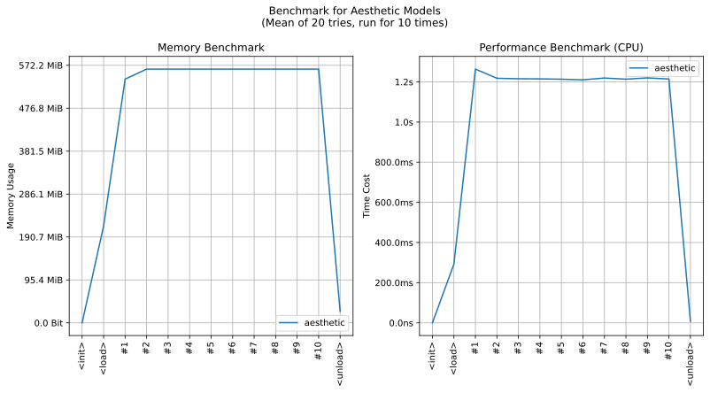

imgutils.metrics.aesthetic
- Overview:
A tool for measuring the aesthetic level of anime images, with the model obtained from skytnt/anime-aesthetic.

This is an overall benchmark of all the operations in aesthetic models:

get_aesthetic_score
- imgutils.metrics.aesthetic.get_aesthetic_score(image: str | PathLike | bytes | bytearray | BinaryIO | Image)[source]
- Overview:
Get aesthetic score for image.
- Parameters:
image – Original image.
- Returns:
Score of aesthetic.
- Examples::
>>> from imgutils.metrics import get_aesthetic_score >>> >>> get_aesthetic_score('2053756.jpg') 0.09986039996147156 >>> get_aesthetic_score('1663584.jpg') 0.24299287796020508 >>> get_aesthetic_score('4886411.jpg') 0.38091593980789185 >>> get_aesthetic_score('2066024.jpg') 0.5131649971008301 >>> get_aesthetic_score('3670169.jpg') 0.6011670827865601 >>> get_aesthetic_score('5930006.jpg') 0.7067991495132446 >>> get_aesthetic_score('3821265.jpg') 0.8237218260765076 >>> get_aesthetic_score('5512471.jpg') 0.9187621474266052